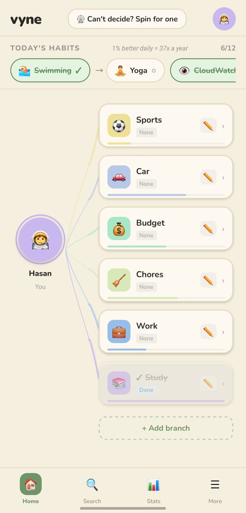

sen
Hayatın,
tek bir yerden.
Tek bir noktadan başlıyor: sen. Önemli olan her şey oradan bir dala dönüşüyor. Kaydır, hepsini bir arada gör.
Erken erişim isteKaydır
fareyi oynat
Vyne nasıl çalışır: merkezden dallanan bir hayat haritası
Merkezde sen varsın.Bir liste değil, bir başlangıç noktası.
Önemli olan her şey bir dala dönüşür.İş, sağlık, alışkanlıklar, para. Hepsi kendi yerinde.
Dallar da dallanır.İstediğin kadar derin, gerektiği kadar sade.
Ve hepsi tek bir bakışta.Düz bir listede kaybolan şey, burada yerini bulur.
Yüz gün: bir alışkanlık nasıl kalıcı olur
Birinci gün kolay.İkincisi de. Otuzuncusu değil.
Yedinci günde ilk kutlama.Sonra 30, 66 ve 100. Görünce anlarsın.
Bir gün kaçırdın. Seri kırılmadı.Bir yaprak düştü ve o günü korudu. Sadece asla üst üste iki kez.
Altmışaltıncı gün gerçek bir eşik.Uydurma bir sayı değil: alışkanlığın otomatikleştiği ölçülmüş ortalama.
Yakından
Tek bir alışkanlık, gerçekten kalıcı
Aşağıdaki uygulamadan gerçek bir ekran, tasarım maketi değil.

Bir dokunuşla işaretle. Form yok, akış yok. Bugünün alışkanlıkları ekranın en üstünde durur.
Seri büyür. 7, 30, 66 ve 100. günde küçük kutlamalar bekler. 66 gerçek bir eşik, uydurma bir sayı değil.
Bir gün kaçırırsan yaprak devreye girer. Haftalarca biriktirdiğin şey tek bir kötü günde silinmez. Sadece asla üst üste iki kez.
Karar veremiyorsan çarkı çevir. Nereden başlayacağını ona bırak, sonra sadece iki dakika başla.
Kontrol sende
Kuralları sen koyarsın
Aşağıdaki temalardan birine dokun: bu sayfa da o temaya dönsün. Uygulamada da tam olarak böyle.
Çevrimdışı çalışır
İnternet olmadan da her şey yerinde. Verin cihazında kalır; bulut yedeklemeyi sen açmadıkça hiçbir yere gitmez.
Hesap istemez
Kayıt yok, e-posta yok. Aç ve başla. Hesap sadece istersen, cihazlar arası yedekleme için.
Günde en fazla bir kez
Tek, nazik bir hatırlatma, seçtiğin saatte. İstemezsen o da yok.
Reklam yok
Dikkatin satılık değil. Bu değişirse açıkça söyleriz, var olan özellikler sessizce ücretli hale gelmez.
Bugün seni bir kez rahatsız edeceğiz.
Hepsi bu. Ertesi gün yine bir kez.
Sorular
Sıkça sorulanlar
Vyne'i şimdi indirebilir miyim?
Henüz mağazalarda değil. Tam lansmandan önce kapalı test aşamasında. Bize e-posta at, hazır olduğunda ilk sen bil ya da şimdiden denemeye katıl.
Ücretsiz mi?
Evet, ve şu an reklamsız. İleride değişirse açıkça söyleriz; var olan özellikler sessizce ücretli hale getirilmez.
Hesap oluşturmam gerekiyor mu?
Hayır. Vyne kayıt olmadan tamamen çevrimdışı çalışır. Hesap sadece opsiyonel bulut yedekleme için, verini başka bir cihazda geri yükleyebilesin diye.
Verilerimi silebilir miyim?
Evet, istediğin zaman, doğrudan uygulama içinden. Hem cihazındaki veri hem de varsa bulut yedeği. Beklemeye ya da destek talebine gerek yok.
Bu normal bir yapılacaklar listesinden nasıl farklı?
Düz listeler hayatını da düzleştirir: bir iş teslim tarihi, hiçbir ölçek hissi olmadan "süt al" maddesinin yanına oturur. Vyne'de birbiriyle ilgili şeyler birbirinden dallanır, böylece her parça istediğin kadar detaylı ya da sade kalır.
Hangi platformlarda olacak?
Android ve iPhone. İkisi de şu an test aşamasında; ilk çıkış Android tarafında olacak.
Bunu kim yapıyor?
Tek kişi. Arkasında ekip ya da şirket yok, sadece düz bir yapılacaklar listesine sığmayan bir hayatı tutmanın daha iyi bir yolunu arayan biri.
Herkese açılmadan önce dene
Vyne şu an kapalı testte. Bize bir e-posta at, seni listeye ekleyelim ya da hemen denemen için davet gönderelim.
E-posta gönder